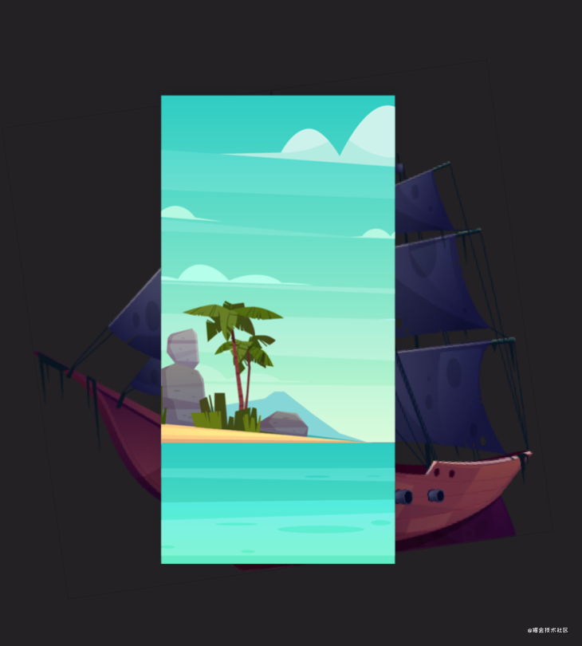

- 标签：前端
最基础的交互式 SVG 教程｜技术点评
很难受，掘金不支持 SVG 的嵌入，以及交互式的 SVG 的使用，实在很是被动 = =
首先先说明一点，SVG 交互其实很简单，最困难的点，就是素材的整理以及动画的曲线、时间等的安排。因此，本文如果快的话，扫一眼代码，基本上就能够理解了。
先放上一波素材 Archive.zip，需要的自取～
如果让你猜测一波下面的 GIF，是什么格式的文档？（标题都泄露了答案，嘤嘤嘤）

SVG，永远的神
可缩放矢量图形（Scalable Vector Graphics，SVG），是一种用于描述二维的矢量图形，基于 XML 的标记语言。作为一个基于文本的开放网络标准，SVG能够优雅而简洁地渲染不同大小的图形，并和CSS，DOM，JavaScript和SMIL等其他网络标准无缝衔接。本质上，SVG 相对于图像，就好比 HTML 相对于文本。
SVG 图形被我们运用到生活的各个角落，诸如粤团的深夜时分为我们提供的 微信 🥮 美食 🥟 推文（误），或是网站中的各种图标、Logo，而且同时，Android 中的 Drawable 就可以直接从 SVG 中转换过去。
Why SVG
技术要有落地的应用场景才能发挥实效，那为什么公众号喜欢使用交互式 SVG 图像而不喜欢直接用 HTML 页面呢？
主要原因有两点：
- HTML 页面制作成本高，需要一定的开发周期和服务器支撑。
- 从正文页跳转 HTML 页面多了一个步骤，容易造成用户流失。
当然，对于需要复杂交互，或者更多功能的话，还是单独开发 Web 页面更好，毕竟 SVG 引用的内容大了，就会……臃肿的要死要活的 😩。
SVG 虽然只能实现简单的交互（高玩：你在忽悠我 🙁），但既能增加交互体验又不会太分散用户对内容的关注点，在很多场景下还是很有需求的。

SVG 的绘制其实很简单，Inkscape、Illustrator 矢量图绘制软件就可以直接导出为 SVG 图像文件，但说实在，我还是建议大家去手打代码，因为，这一章我们所谈论的动画，并不能在别的软件中很好的运行下去。
SVG交互本质还是基于SVG SMIL animation，配合SVG的click事件，实现非常简单的交互。
哪里可以用上 SVG
虽然实现的效果很有限，但还是有很多发挥空间的，比如以下应用场景：
- 【广告宣传】点击车子后，车子移动，经过某个位置显示某个特性或地点名称文案（类短视频）。
- 【前后变化】譬如说粤团曾经发过的古迹修复照
- 【心理测试】点击某个选项后，出现选择结果。
- 【密码解锁】点击指定的几个数字后，显示解锁内容。
- 【猜灯谜】点击后显示内容，类似翻牌。
下面开始展开我们的故事～ 🍭
构建 SVG
素材准备
首先我们先获取几张素材吧，这次，就拿听说考试的录音来当样本吧，让我们下载一些海盗船和海岛的照片～
我们可以随便选用图片，可以是 SVG 直接嵌入，这适合要变换 SVG 内容的素材，例如 SVG 中的一辆车 🚑 🚒 🚓～，用于对它的轮胎等构件展开动画。
也可以选用 PNG 等其他任何格式的图片导入（只要你不需要支持 IE 😏）。这里我便直接使用上了 PNG（SVG 导出的）。

构建开始
首先，我们先创建一个空文件，后缀名 .svg，内容如下：
<svg id="svg" width="640" height="960" xmlns="http://www.w3.org/2000/svg" viewBox="0 0 640 960"></svg>
上述代码定义了一个宽度 640 高度 960 的 SVG 画布，然后我们先给他加个背景吧。
SVG 支持一些 CSS 属性，当然，我们也可以直接使用 <image> 元素添加图片而不使用 background：
<svg ... style="background: url(background.png) center/cover no-repeat">
然后我们加个 trigger 吧～就做个文字加一个倒三角形，如下代码：
<g id="button">
<text fill="#fff" font-weight="900" font-family="Source Han Serif" font-size="24" text-anchor="middle" x="320" y="835">
点击我继续
</text>
<path d="M310,860 L320,870 L330,860 L335,860 L320,875 L305,860 Z" fill="#fff"/>
</g>
通过调整 x、y 把位置调好，fill 为文字颜色，font-size 设置字号，text-anchor 设置文字的锚点……
添加船只图片
SVG 图像格式转换软件支持 JPEG、PNG 格式，是否支持动图GIF不明确。
<image xmlns="http://www.w3.org/2000/svg" href="ship.png"
width="364" height="353" x="640" y="460" opacity="0" visibility="hidden" />
添加高分喷雾
<text font-family="Source Han Serif" font-size="36" opacity="0" text-anchor="middle"
x="320" y="200" fill="#fff" visibility="hidden">
生活就像海洋
</text>
<text font-family="Source Han Serif" font-size="36" opacity="0" text-anchor="middle"
x="320" y="260" fill="#fff" isibility="hidden">
只有意志坚强的人
</text>
<text font-family="Source Han Serif" font-size="36" opacity="0" text-anchor="middle"
x="320" y="320" fill="#fff" visibility="hidden">
才能听到答案
</text>
添加动画
animate 元素
animate 动画元素放在形状元素的内部，用来定义一个元素的某个属性如何踩着时点改变。在指定持续时间里，属性从开始值变成结束值。
首先，我们要明白，CSS 动画的基本的定义方法：
<animate attributeName="x" from="160" to="60" begin="0s" dur="3s" fill="freeze" />
attributeName 代表着你要变换的属性，这里是 x 也就是横坐标。from to by 三种都用于指示变化量，而 begin 用于标记动画开始的时间。使用 dur 指明动画的时长，free="freeze" 代表着动画结束后该元素保持在动画结束的状态。
<animte> 的使用方式很是简单，举个栗子吧 🌰：
<text font-family="Source Han Serif" font-size="36" opacity="0" text-anchor="middle"
x="320" y="320" fill="#fff" visibility="hidden">
才能听到答案
<animate attributeName="opacity" to="1" begin="button.click+3" dur="2s" fill="freeze" calcMode="linear"/>
<animate attributeName="visibility" to="unset" begin="button.click+3" dur="0s" fill="freeze" calcMode="linear"/>
</text>
上面的那一段代码的意思是，在 #button 被点击后的第 3 秒开始执行 opacity 和 visibility 的动画，分别变化到 1 和 unset。
展开代码
我们直接将这些代码推广，按照下面这个逻辑展开 ctrl-c-v 吧：）
- 点击事件
|- +0s
|- 遮罩
|- 文字 A
|- +1.5s
|- 文字 B
|- +3s
|- 文字 C
|- 海盗船图片
<svg id="svg" width="640" height="960" xmlns="http://www.w3.org/2000/svg" viewBox="0 0 640 960"
style="background: url(background.png) center/cover no-repeat">
<image xmlns="http://www.w3.org/2000/svg" href="ship.png" width="364" height="353" x="640" y="460" opacity="0"
visibility="hidden">
<animate attributeName="x" to="320" begin="button.click+3" dur="2s" fill="freeze" keySplines=".94 .19 .75 .62"
calcMode="spline"/>
<animate attributeName="opacity" to="1" begin="button.click+3" dur="2s" fill="freeze" calcMode="linear"/>
<animate attributeName="visibility" to="unset" begin="button.click" dur="0s" fill="freeze" calcMode="linear"/>
</image>
<g id="button">
<text fill="#fff" font-weight="900" font-family="Source Han Serif" font-size="24" text-anchor="middle" x="320"
y="835">点击我继续
</text>
<path d="M310,860 L320,870 L330,860 L335,860 L320,875 L305,860 Z" fill="#fff"/>
</g>
<rect width="640" height="960" fill="rgba(0,0,0,.3)" opacity="0" visibility="hidden">
<animate attributeName="opacity" to="1" begin="button.click" dur="2s" fill="freeze" calcMode="linear"/>
<animate attributeName="visibility" to="unset" begin="button.click" dur="0s" fill="freeze" calcMode="linear"/>
</rect>
<text font-family="Source Han Serif" font-size="36" opacity="0" text-anchor="middle" x="320" y="200" fill="#fff"
visibility="hidden">
生活就像海洋
<animate attributeName="opacity" to="1" begin="button.click" dur="2s" fill="freeze" calcMode="linear"/>
<animate attributeName="visibility" to="unset" begin="button.click" dur="0s" fill="freeze" calcMode="linear"/>
</text>
<text font-family="Source Han Serif" font-size="36" opacity="0" text-anchor="middle" x="320" y="260" fill="#fff"
visibility="hidden">
只有意志坚强的人
<animate attributeName="opacity" to="1" begin="button.click+1.5" dur="2s" fill="freeze" calcMode="linear"/>
<animate attributeName="visibility" to="unset" begin="button.click+1.5" dur="0s" fill="freeze"
calcMode="linear"/>
</text>
<text font-family="Source Han Serif" font-size="36" opacity="0" text-anchor="middle" x="320" y="320" fill="#fff"
visibility="hidden">
才能听到答案
<animate attributeName="opacity" to="1" begin="button.click+3" dur="2s" fill="freeze" calcMode="linear"/>
<animate attributeName="visibility" to="unset" begin="button.click+3" dur="0s" fill="freeze" calcMode="linear"/>
</text>
</svg>
SVG animation 参数详解
基于大佬的作品，做出一定的勘误与补充：
1. attributeName = <attributeName>
要变化的元素属性名称，可以是元素直接暴露的属性，例如，对于本文反复出现的文字 text 元素上的 x、y 或者 font-size、font-weight、opacity。
2. attributeType = CSS | XML | auto
attributeType 支持三个固定参数，CSS | XML | auto，用来指示 attributeName 属性值的列表。x、y 以及 transform 就属于XML, opacity 就属于 CSS，auto 为默认值，自动判别的意思（实际上是先当成 CSS 处理，如果发现不认识，直接 XML 类别处理）。因此，如果你不确信某属性是 XML 类别还是 CSS 类别的时候，我的建议是不设置 attributeType 值，直接让浏览器自己去判断，几乎无差错。
3. from、to、by、values
上面 4 个属性是一个家族的，是大师一家子（一家子就该团团圆圆）。他们解决的是非常有哲理的问题：你从哪里来？要到哪里去……
from = <value>动画的起始值。to = <value>动画的结束值。by = <value>动画的相对变化值。values = <list>用分号分隔的一个或多个值，可以看出是动画的多个关键值点。
from, to, by, values虽然属于一个家族，但是相互之间还是有制约关系的。有以下一些规则：
- a. 如果动画的起始值与元素的默认值是一样的，
from参数可以省略。 - b. （不考虑
values）to、by两个参数至少需要有一个出现，否则就会上演皇帝的新动画。to表示绝对值，by表示相对值。 拿位移距离来说，如果from是100,to值为160则表示移动到160这个位置，但是by值是160的话，则表示移动到100 + 160 = 260这个位置。 - c. 如果
to、by同时出现，则by打酱油，只识别to。 - d. 如果
to、by、values都没设置，自然没动画效果。如果任意（包括from）一个属性的值不合法，规范上说是没有动画效果。 - e.
values单独一个值的时候是没有动画效果，多值时候有动画效果。当values值设置并能识别时候，from、to、by的值都会被忽略。那values属性是干什么的呢？别看名字挺大众的，其还是有些功力的。我们实现动画，不可能就是单纯的从 A 位置到 B 位置，有时候，需要去 C 位置过渡下，即A->C->B。此时，实际上有3个动画关键点。而from、to、by只能驾驭两个，此时就是values大显身手的时候了！
4. begin、end
begin 指动画开始的时间，看上去很简单。设个时间，延迟嘛~~实际上非也非也，上面出现的 beigin="3s" 只是最简单最基本的表示。
begin 的定义是分号分隔的一组值。看到没？是一组值，单值只是其中的情况之一。例如，beigin="3s;5s" 表示的是 3s 之后动画走一下，6s 时候动画再走一下（如果之前动画没走完，会立即停止从头开始）。所以，如果一次动画时间为 3s, 即 dur="3s"，同时没有 repeatCount 属性时候，我们可以看到动画似乎连续执行了 2 次。
begin 还支持交互功能，算是交互 SVG 中的顶梁柱啦！我们可以使用 idRef.eventName 在指定事件发生时候开始动画，例如 hello.click 意思是 #hello 元素被点击的时候动画开始。
+、- 两个相对的操作符用于控制动画开启的时间，例如 hello.click+2 指点击后 2s 后才开始动画。
5. dur
dur 属性值比 begin 简单了好几层楼，就后面两种：常规时间值 | "indefinite"。
“常规时间值”就是 3s 之类的正常值，而 "indefinite" 指时间上的无限。试想下，动画时间无限，实际上就是动画压根不执行的意思。因此，设置为 "indefinite" 跟没有 dur 是一个意思，与 dur 解析异常一个意思。
6. calcMode、keyTimes、keySplines
这几个参数是控制动画先快还是先慢类似这样作用的。
calcMode 属性支持 4 个值：discrete | linear | paced | spline，中文意思分别是：“离散” | “线性” | “踏步” | “样条”。
discrete：from值直接跳到to值。linear：animateMotion元素以外元素的calcMode默认值。动画从头到尾的速率都是一致的。paced：通过插值让动画的变化步调平稳均匀。仅支持线性数值区域内的值，这样点之间“距离”的概念才能被计算（如position、width、height等）。如果指定了paced，任何keyTimes或keySplines值都会摸鱼。spline：插值定义贝塞尔曲线。spline点的定义在keySplines属性中，每个时间间隔控制点由keyTimes定义。
keyTimes = "<list>"
跟上面提到的 <list> 类似，都是分号分隔一组值。keyTimes 从名字上看是关键时间点的意思，大致就是这个意思。
keySplines = "<list>"
keySplines 表示的是与 keyTimes 相关联的一组贝塞尔控制点（默认 0 0 1 1）。每个控制点使用 4 个浮点值表示：x1 y1 x2 y2。只有模式是 spline 时候这个参数才有用，也是分号分隔，值范围 0~1，总是比 keyTimes 少一个值。
如果 keySplines 值不合法或个数不对，是没有动画效果的。
7. fill
fill 表示动画间隙的填充方式。支持参数有：freeze | remove，其中 remove 是默认值，表示动画结束直接回到开始的地方。freeze “冻结”表示动画结束后像是被冻住了，元素保持了动画结束之后的状态。
小结
SVG 永远的神～ 参考案例页面：interactive-svg ！
- 本文正在参与「掘金 2021 春招闯关活动」, 点击查看活动详情